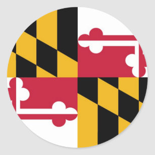
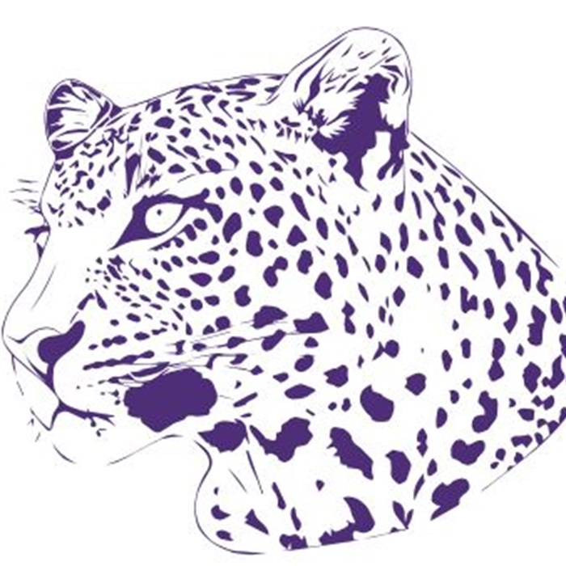
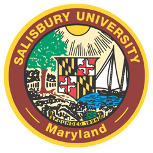
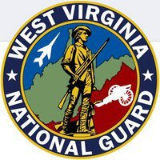
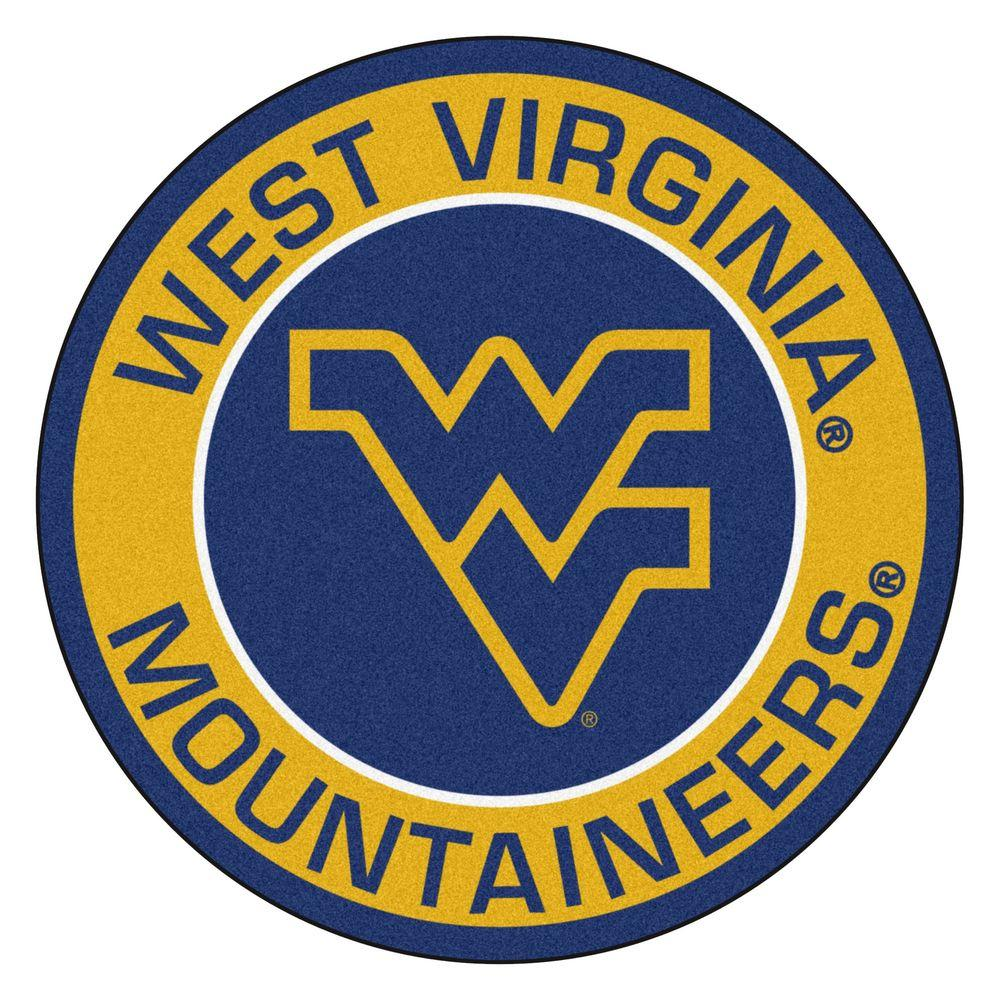

KIERSTEN MIKULSKY
Computer science student | Aspiring software engineer
Hello
My name is Kiersten Mikulsky. I am a computer science student at West Virginia University and an aspiring software engineer. I love to play games and write code. I have pet bugs and a cat named cereza that loves to talk. This is where I will put an interesting bio that shows off who I am as well as my personality. I haven't really decided what I want to do with a picture yet.
About
-

Beginning Frederick MD
As a kid I was as inquisitive as I was creative. Growing up in Frederick, Maryland allowed me to explore my interests in science and technology where imagination and curiosity fuled the fun activities and adventures that helped to shape my passions. By the time I was in elementary school, I was begging my parents for a microscope and a computer for my room. I would go out into the backyard and look for samples for my slides, build crazy “inventions” with my sister out of the junk we could find, make home projects on my windows 2000 computer, and never stop talking about my love for video games.
-

Highschool Smithsburg MD
I later moved to Smithsburg where I went to middle and highschool. By the time I was a sophmore in highschool, I was taking AP science courses, was the saxophone section leader of the marching band, and competed in gymnastics and track. Science and computer labs were some of the highlights of my school days where our classes got to do exciting hands on activities. By the end of highschool I decided to apply to Salisbury University in Maryland to pursue a degree in Biology and enlist in the Army National Guard.
-

Salisbury University Salisbury MD
At Salisbury University I was lucky enough to go on school trips where our class got to participate in environmental research. During this time I completed basic and advanced training for the Army and began attending training for the guard while pursuing my degree in biology. After learning more about bioinformatics in my classes I became interested in learning how to code. I started with a tutorial in C++ for creating a simple game of pong and later found myself wanting to transition to a new major in Computer Science. I applied to enroll at West Virginia University where I would start my new major and study to become a software engineer.
-

US Army National Guard Gassaway WV
I spent 6 yrs in the Army while attending both Salisbury and WVU. During my time in the service I got to travel to different locations in the US for training, work with special forces, and help the community. The military taught me discipline, leadership, and how to work best with a team.
-

West Virginia University Morgantown WV
While studying computer science at WVU I worked as an intern at Nextgen Federal systems where I got to help full time engineers develop applications and websites for clients. I worked on a variety of projects for school including my capstone where my team built an autonomous wheelchair for the elderly. Today I am a senior computer science student at West Virginia University with less than a few credits to go until graduation.
Experience
DEVELOPMENT SUPPORT INTERN
NEXTGEN FEDERAL SYSTEMS
During my time as a Development Support Intern I worked on the company website, as well as created a new website for a local community organization. This furthered my knowledge in HTML, CSS, JavaScript and more, and gave me experience in an Agile development environment.
HTML CSS TS JS ANGULAR WORDPRESS UI DESIGNNATIONAL GUARD ENLISTED
UNITED STATES ARMY
During my time in the army I learned how to be a leader and how to work well with a team. I learned how to develop and execute a plan during training with my assigned squad as corporal and worked hard to make sure my duties were performed correctly as a specialist.
TEAM LEADERSHIP SECURITY CLEARANCE STRATEGIC PLANNING COMMUNICATIONEducation
COMPUTER SCIENCE
WEST VIRGINIA UNIVERSITY
Earned over 126 credit hours toward BS in Computer Science Currently one class from receiving degree due to covid related complications and will finish classes remotely in Fall Chose Software Engineering and Cybersecurity as focuses for my program
RELEVANT COURSEWORK
- Advanced Software Engineering
- Analysis of Algorithms
- Computer System Concepts
- Computer Architecture
- Compiler Construction
- Game Development
- Intro to Data Structures
- Intro to Software Engineering
- Practicing Cybersecurity
- Operating Systems Structure
- Intro to Software Engineering
- Principles of Programming Languages
BIOLOGY
SALISBURY UNIVERSITY
Studied biology for 3 years between both universities with 58 credits towards a degree in Biology
RELEVANT COURSEWORK
- Medical Microbiology
- Introductory Physiology
- Statistics with Computer Analysis
- Composition and Research
- General Biology
- Fundamentals of Chemistry
- Zoology
- Human Anatomy and Physiology
This is where I will show off a few of my projects and go into detail about what I did card idea is okay. game as video w/ website code (design process) tech used in this website (for school- add positions on each team for project i.e. agile env. )